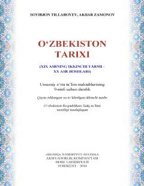

OT9-sinf o'quvchilari uchun XIX asr ikkinchi yarmi va XX asr boshi O'zbekiston tarixi darsligi.
Mazkur darslik umumiy o'rta ta'lim maktablarining 9-sinfi uchun mo'ljallangan bo'lib, XIX asrning ikkinchi yarmi va XX asr boshlaridagi O'zbekiston tarixini, Rossiya imperiyasi istilosi va mustamlakachilik davri voqealarini yoritadi. Kitobda O'rta Osiyo xonliklarining ijtimoiy-iqtisodiy, siyosiy va madaniy hayoti, shuningdek, milliy ozodlik harakatlari haqida batafsil ma'lumot berilgan.